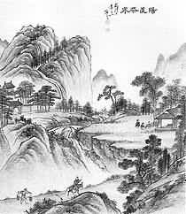
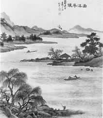
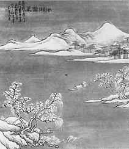
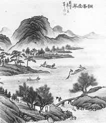

徐达章(1874―1914)，字成之、江苏 省宜兴县屺亭桥(古称计亭桥)人，善绘书， 工诗文、 是我国现代杰出大宣家徐悲鸿先生 的父亲。出身清寒。在乡镇上靠教私塾并耕种
祖传三献瓜田的微薄收入、勉强维持一家八 口的生活。他平时爱好绘画、书法也很出色。 是一个完全靠刻苦自学而成才的著名画家，当 时宜兴境内的寺、观、庙、庵匾额上的大字，
很多是出达章的手笔，他善长人物肖像、 山水、花卉。又精于书法、篆刻。他的写意 卉和青绿山水画，很受徐渭和比他略早一些时 候的任伯年等画家的影响、笔墨潇洒、简练。
现存他的印章有“儿女心肠、英雄肝胆”、“ 半耕半读半渔樵”、 “读书声里是吾家”等， 把他的感触和抱负表现在印章里，绕有韵味。 幼小的徐悲鸿也跟随他父亲徐达章一面种田、
一面读书学画、使其对国画、书法、诗词、文章，从少年时期就有很好的素养。1908年至1911年，宜兴连年大水，田园荒芜，无以为 生，徐达章只得携带十三岁的徐悲鸿背井离乡、
跑遍无锡、常州等地的村镇，靠鬻字卖画为生， 过着栉风沐雨、露宿风餐的流浪生活。1914年 夏天，患了重病，返回家不久便与世长辞了。 年仅四十。传世作品有《太狮少狮图》、《寿星骑鹿》、《钟馗》、
《和合》、 《课子图》和《荆溪十景图》等。徐悲鸿专长画马， 徐达章专长画狮，画得非常生动。 《荆溪十景图》山水画册、作于清光渚丁未年、为徐达章
根据古代文人题咏而绘的工书山水书。纸本， 设色，从31．6厘米、横27．8厘米。画中的青 山绿水。苍秀浓隽、景色奇古，是一套绵密工 致、古色古香的中国画，描绘了包括张公洞、
善卷洞、玉女潭在内的宜兴风光景色，体现了 作者精湛的写实功力、别有他自己的传统风格和艺术特色。
阳羡茶泉
“阳羡茶泉”是宜兴风物画卷《荆溪十景》 之一。描绘了著名的唐贡茶、金沙泉产地湖滏 唐贡里，山青水绿的绮丽风光。
前人饮茶，讲究用水，认为“山水上，江 水中、井水下”。用泉水煎的茶，味醇、形美、 色翠。在唐朝，宜兴的金沙泉也成为贡茶时必须同时上贡的煎茶良泉。金沙泉又称玉女泉，
它的源头在金沙寺向北张公洞附近的玉女潭。 这里山岭重叠，林木茂密，山林下面有透水性质好的砂岩，蓄有较多的地下水；金沙泉四季 不绝，泉水就是从这难溶的石英岩中渗透过来
的，因此清澈见底、杂质很少。氯化物含量也 很小、形成了香冽甘美的泉水，据说、当时金 沙泉以陶都特产的紫砂水瓶(俗称雅壶)为容器，由水路专程运往京城长安。用阳羡唐贡茶，
阳 羡 茶 泉
(明)方逢时
一泓飞雪落晴峰，万树流云散晓空。
采处喜逢金栗长，汲来惊见玉花浓。
乘风便可游三岛，锡贡应先上九重。
欲识山中清绝处，试将标品问卢同。
金沙泉泡茶的特色是：汤清、色浓、茶香、回 味甜。周高起在《洞山�舨柘怠分行稳菅粝厶� 贡茶时说：“淡黄不绿,叶径淡白而厚。制成 梗绝少、入汤色柔白如玉露、味甘。芳香藏味
中、空蒙深水、啜之愈出。致在有无之外。” 可见品质之佳。

画溪花浪
“画溪花浪”是宜兴风物画卷《荆溪十景》 之二。此景在鼎蜀镇汤渡兴隆桥以南，地处天 目山支脉南山脚下。这里群山环绕。高峰重叠、 碧波清秀的画溪河就横贯在它的全境。古人有
诗云：“层峦列环卫、一溪贯中央。”悠悠溪 水、源源流长，晴峦浴翠、浪泛青天。仿佛牧 笛远闻于村前、渔舟竞泊于两岸。荡漾的溪流， 微茫的岚影、好象布置在一幅山水画里。
从前，画溪雨岸，遍植桃树杨柳、朱藤隔 河相连、每当阳春三月，两岸红雨般的桃花与 相继盛开的各色朱藤花、映入水中、五彩缤纷； 柳垂丝丝，絮花片片，碧流花雨、香飘十里。
游人荡舟行驶在画溪河上、犹如置身于“花浪” 之中，这就是“画溪花浪”美称的由来。
画 溪 花 浪
(明)任名臣
青山曲曲抱溪回，十里藤花送酒杯，
啼鸟过时红欲碎，游鱼沫处绿成堆。
纹疑西子颦中见。艳逐鱼人问后来。
独有锦江差可拟。携樽应得恣徘徊。
“荆溪百里水涵空。”古时，画溪是荆溪 的―个支流、它的源头是湖滏金沙泉，又称玉女泉。泉水出自透水性好而又难溶的砂岩层的 石英中，所以画溪的水，淳厚甘美，用以烹茶，
其味特别清醇。
历代文人描写“画溪花浪”景色的诗文书 画不少。其中以明代任名臣作七言诗和清代徐 达章画十景图最为出色。其诗写道：“青山曲曲 抱溪回，十里藤花送酒杯，啼鸟过时红欲碎。
游鱼沫处绿成堆，纹疑西子颦中见，艳逐渔人 问后来，独有锦江差可拟，携樽应得恣徘徊。” 这首诗对画溪的赞美，可称已至于极。
并*（原字左有“水”旁） 利*（原字左有“水”旁）
雪蓑
“并*利*雪蓑”是宜兴风物画卷《荆溪十景》 之三。此景在宜兴县城西北并利一带广阔的圩区农村，描绘了江南角米之乡的雪景。远山、 灯楼、寺庙、古渡、鱼舟、河流等景色。特别是勤劳而勇敢的农民、渔翁。披着蓑衣、不畏寒风刺骨，不怕大雪压身。在皑皑白雪中撤网、
垂钓，展现了一幅“瑞雪兆丰年”的美好图景。
古时候，在接近西�C北边荷花港的地方， 有一座周孝候封的章浦亭。萦红绕翠，也是荆 溪佳境的集中处，如今亭子没有了，只剩下一 个墩，而章浦的名称也已讹传为张虎。查考章
浦，原来就是当年的并练浦。后来又改练为利*。 过去章山的水源汇集于章溪，而章溪之水又 注入章浦。波光长练在漂荡之中，故改名为并* 利*。古称漂为“并*”、“练”指白布。南齐谢
元晖有“澄江清如练”之诗句，古人形容并*利* 这一带的景观、在阴晴明晦中各具特色，简直 可与洞庭湖、嘉陵江的风光相媲美。
并*利*雪蓑
(清)徐喈凤
溪空云冻雪菲菲，何事渔舟独未归？
隐隐白衣人把钓，茫茫素练浪冲矶。
半身蓑笠忘寒暑，一色乾坤浑是非；
此景从来难写照，云林谈笔或依稀。
铜 峰 叠 翠
“铜峰叠翠”展现了宜兴城南高峰重叠、 层翠环抱的秀丽景色，犹如翡翠山屏、顾盼如 画，被列为《荆溪十景》之四。 世传《荆溪十景》以“铜峰叠翠“与“玉
潭凝碧”二景为最，山色水光。明靓无匹，揽其 胜而扬其名。《宜兴县志》说：“全县有名山一 百三十六，”在宜兴县城的西南面，都是高高的 山峰、相互连接着；其中有一个最高的山峰， 离城约十余里，就是铜官山。它“直治城于众 山中为君主”，故此山原名“君山”；因在荆
溪之南、古时又称荆南山。史载：“秦汉之 际，盖设铜官于此，故铜坑之山。犹有遗迹。 或从官为棺。谓袁�^之殁。天赐铜棺葬于山巅。 其言与王乔玉棺同。”又因为从前这座山里曾
经产铜。经官府开采之后，便称为铜官山。它 的山脉，是从浙江省的天目山来的，到了宜兴 的南边部分，统称为南山，最高的山峰是铜官 山。海拔五百多米。
登上铜官山的最高峰―― 鹅头峰。可以看 到苏、浙、皖三省的地面，浙江的长兴、安徽 的广德历历在目。水天一色的太湖也尽收眼底。 每逢春夏之交，山色苍翠，非常美麓。绿阴深
处。好似仙侣之境；岩壑之畔，无异世外桃源。 这铜官之峰，兴云降雨，环变万状，风景之佳， 出于天然。昔日苏东坡择居宜兴邀游此山时， 也曾乐而忘返。明代诗人万秋期作成一首《小
重山・铜峰叠翠》词，写道：“修竹阴阴接古 松，巨灵神斧劈，玉芙蓉。佛螺青染晓装重， 双翡翠，飞上最高峰。山号雅宜铜。土花开蚀 遍、嫩苔封。层岚时吐绿云浓，溟朦雨，如映碧
纱笼。”读了这首词，可以想见铜峰佳景的一斑。
铜官山的南面，有许多山峰，象花瓣一般 矗立着的叫做芙蓉山。西面为大芦山，北面为 南岳山。南岳之名始于三国时代，孙皓封国山时以此为南岳。从前，南岳山下有一南岳寺，
四周丛山峻岭，竹木成林，既幽静又清凉，是 天然的避暑胜地。寺后有个洗肠池，一说因古 时有一位伏虎禅师于此出肠洗涤而得名。一说 “八仙过海”中的张果老，年轻时出家在南岳
寺做了和尚。一天清早，他突然把肚子里的肠 全部剖出来放在池中洗涤。小和尚一见，大惊 失色，急忙禀告老方丈，俱出山门看望时，张 果老却笑嘻嘻地若无其事的进寺来了。到了第
二天的旱晨，就不见了张果老的影踪。此事一 经传出，南岳寺就大大出名，四季香火繁盛， 许多香客都要特地赶到洗肠池喝一口清水。以 示吉祥如意、多福多寿。
铜 峰 叠 翠
（清）潘宗洛
嵯峨不与众山邻，远睹云根接地轮，
依县作屏横翠黛，绕溪浮影压金鳞。
层层雨洗天同色，曲曲风回谷应春，
我欲往寻袁令迹，薜萝环接石苔新。